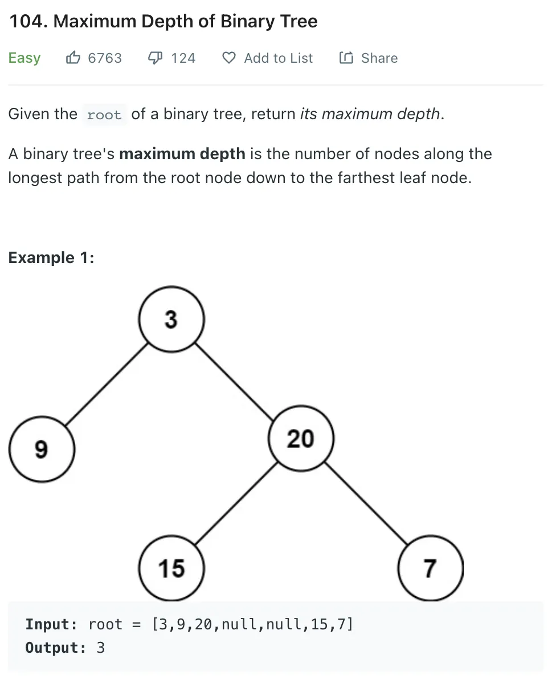
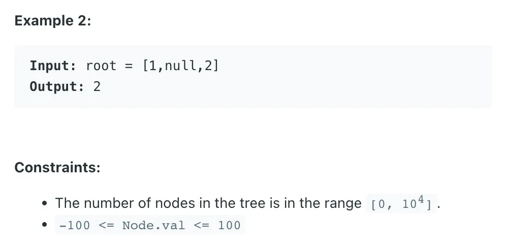

104. Maximum Depth of Binary Tree
Question


✍🏽 My Solution
Runtime: 0 ms, faster than 100.00% of Java online submissions for Maximum Depth of Binary Tree.
Memory Usage: 42.2 MB, less than 80.17% of Java online submissions for Maximum Depth of Binary Tree.
class Solution {
public int maxDepth(TreeNode root) {
if (root == null) return 0;
return Math.max(maxDepth(root.left), maxDepth(root.right)) + 1;
}
}
🧠 Thought Process
- Why did I choose this particular implementation?
- 看了王爭的解法寫的
- 先判斷
root是否為 null，若是則返回0 - 回傳此節點的深度
- 遞歸找出
root的左節點最大深度 - 遞歸找出
root的右節點最大深度 - 比較兩個節點的最大深度，取最大值
- 最後並
+1，需加上根節點自己
- 遞歸找出
- What is the time/space complexity of my solution? How do I know?
- time: O(n)，n為二叉樹的節點個數。每個節點在遞歸中只被遍歷一次。
- space: O(h)，h為二叉樹的高度。遞歸函數需要棧空間，而棧空間取決於遞歸的深度，因此空間複雜度為二叉樹的高度。